Experience
Publications
- Rebillard, A., Dupret, V., Beznosov, P., & Ahlberg, P. E. (2026). Investigating a Devonian vertebrate assemblage with synchrotron microtomography of coprolites. Scientific Reports. https://doi.org/10.1038/s41598-026-63718-2
- Gonçalves, D., Delsahut, B., Hamann, C., & Rebillard, A. (2026). New palaeontological remains from the Early Permian Réalmont Basin (Tarn, France): implications for late-Variscan palaeobiogeography and Progyrolepis taxonomy (Actinopterygii). Fossil Record, 29(2), 469–497. https://doi.org/10.3897/fr.29.197176
- Marchetti, L., Logghe, A., Rebillard, A., MacDougall, M. J., & Fröbisch, J. (2026). The evolutionary significance of the earliest cloacal opening in Synapsida. iScience, 29(8). https://doi.org/10.1016/j.isci.2026.116752
- Marchetti, L., Logghe, A., Buchwitz, M., MacDougall, M. J., Rebillard, A., Martens, T., & Fröbisch, J. (2026). The earliest reptile body impressions with scaly skin. Current Biology, 36(5), 1281–1290. https://doi.org/10.1016/j.cub.2026.01.036
- Rebillard, A., Jannel, A., Marchetti, L., MacDougall, M. J., Hamann, C., Steyer, J.-S., & Fröbisch, J. (2026). Early Permian terrestrial apex predator regurgitalite indicates opportunistic feeding behaviour. Scientific Reports, 16(1), 1087. https://doi.org/10.1038/s41598-025-33381-0
- Gonçalves, D., Lemaître, G., Štamberg, S., Logghe, A., Rebillard, A., Pouillon, J.-M., Fernandez, V., & Steyer, J.-S. (2026). A new aeduellid from the Permian Franchesse Lagerstätte (Bourbon-l’Archambault Basin, Allier, France) highlights the evolution of Palaeozoic actinopterygians. Journal of Systematic Palaeontology, 24(1), 2661930. https://doi.org/10.1080/14772019.2026.2661930
- Logghe, A., Rebillard, A., Houée, G., Sánchez Gimeno, A., Courville, E., Elbaz, L., Taraba, P.-M., et al. (2025). Palaeoecology and palaeoenvironment of Discosauriscus Kuhn, 1933 with exceptional preservation of skin and intestine molds from the Early Permian of Franchesse (Allier, France). Comptes Rendus. Palevol, 24(24), 489–504. https://doi.org/10.5852/cr-palevol2025v24a24
- Gonçalves, D., Luccisano, V., Rebillard, A., Logghe, A., Štamberg, S., & Steyer, J.-S. (2025). New aquatic vertebrate and ichnological remains from the Upper Carboniferous of Decazeville (Aveyron, France): implications for the paleofauna of the French Variscan basins. Comptes Rendus. Palevol, 24(11). https://doi.org/10.5852/cr-palevol2025v24a11
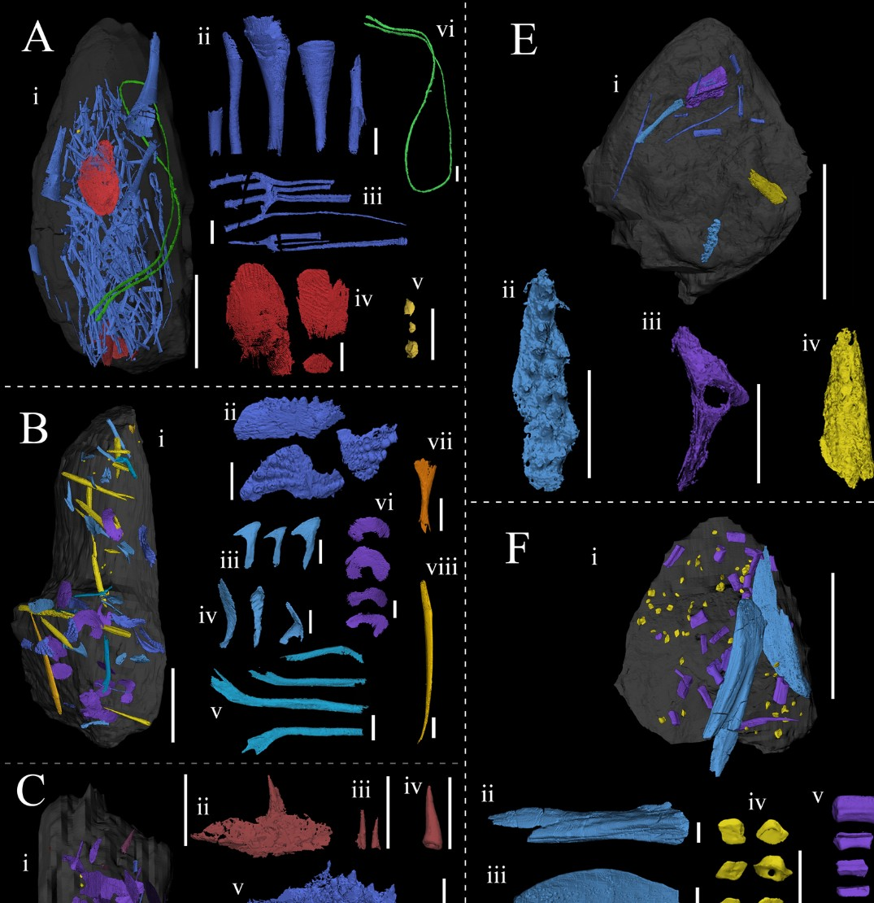
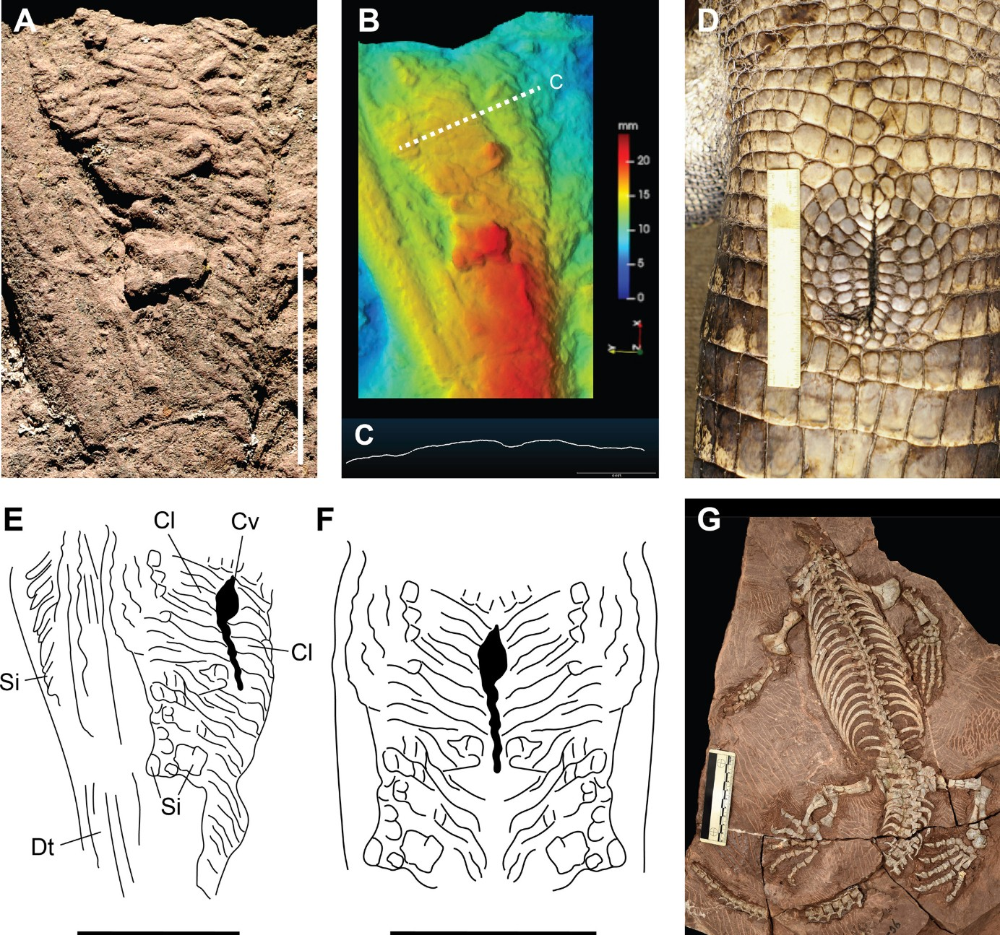
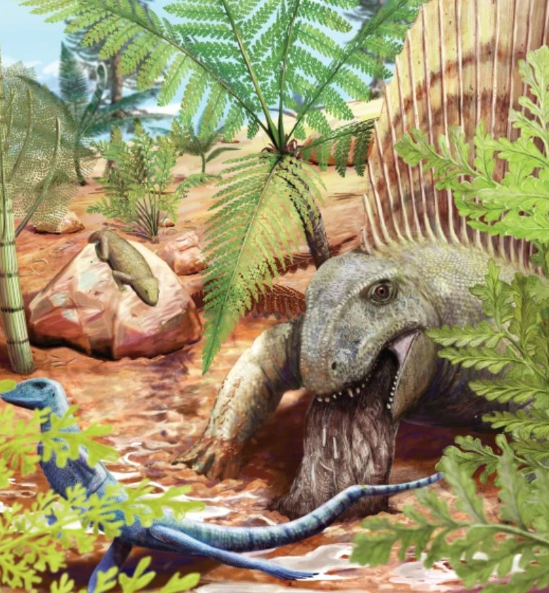
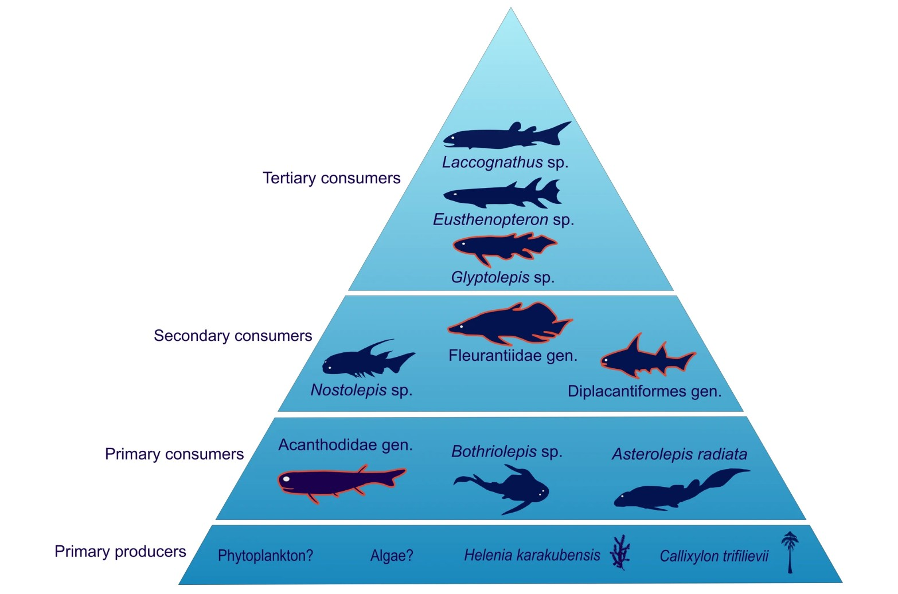
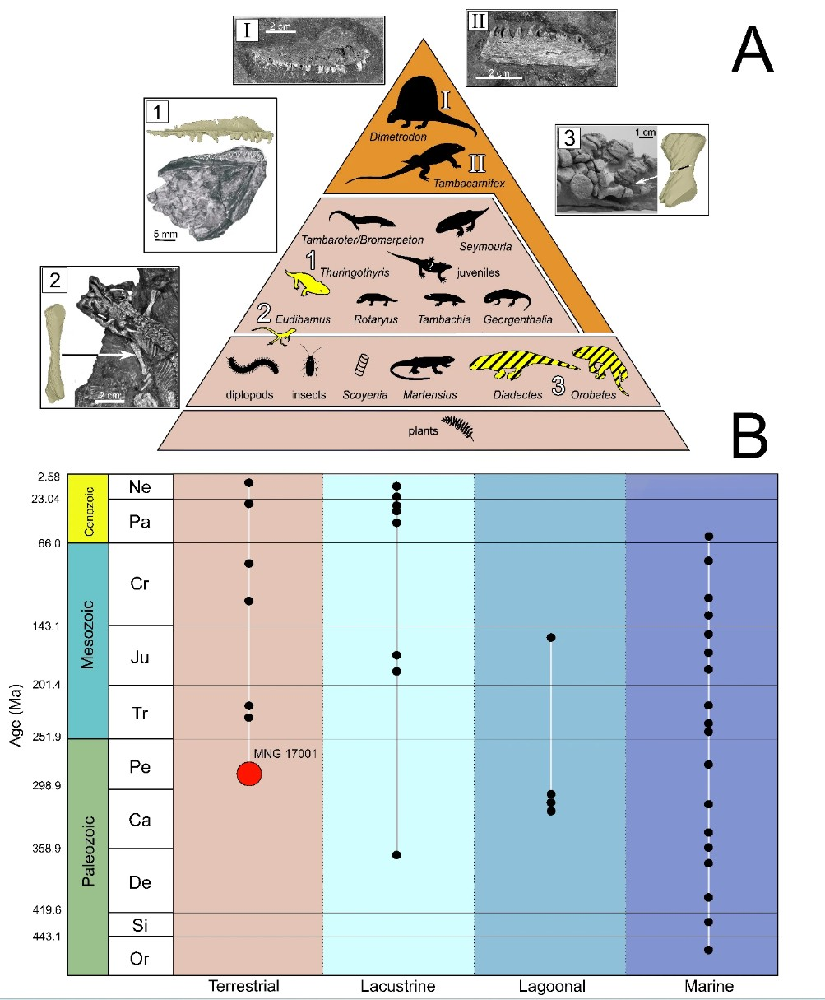
Conference abstracts
Exceptional soft tissue preservation from the terrestrial Early Permian of the Thuringian Forest, central Germany
Jörg Fröbisch, Lorenzo Marchetti, Michael Buchwitz, Antoine Logghe, Mark MacDougall, Arnaud Rebillard, Thomas Martens.
Pyritised intestines provide new insights into digestive taphonomy and palaeoecology in a seymouriamorph (Early Permian, France)
Arnaud Rebillard, Antoine Logghe, Pierre Guériau, Christopher Hamann, Jörg Fröbisch, J.-Sébastien Steyer. Oral presentation.
Tetrapod feeding remains: the first bromalites from Bromacker (Early Permian, Germany)
Arnaud Rebillard, Andréas Jannel, Lorenzo Marchetti, Mark MacDougall, Christopher Hamann, J.-Sébastien Steyer, Grace Townsend, Jörg Fröbisch. Oral presentation.
Permian feeding remains: a study of bromalites from Bromacker (Thuringia, Germany)
Arnaud Rebillard, Andréas Jannel, Lorenzo Marchetti, Mark MacDougall, Christopher Hamann, J.-Sébastien Steyer, Grace Townsend, Jörg Fröbisch. Oral presentation.
Investigating a Devonian vertebrate assemblage with synchrotron microtomography of coprolites
Arnaud Rebillard, Vincent Dupret, Pavel Beznosov, Per Erik Ahlberg. Oral presentation.
Exceptional tetrapod body impressions and scaly skin traces from the Early Permian Bromacker locality (Thuringia, Germany)
Lorenzo Marchetti, Antoine Logghe, Michael Buchwitz, Mark MacDougall, Arnaud Rebillard, Jörg Fröbisch.
New aquatic vertebrate and ichnological remains from the Upper Carboniferous of Decazeville (Aveyron, France): implications for the palaeofauna of the French Variscan basins
Daniel Gonçalves, Vincent Luccisano, Arnaud Rebillard, Antoine Logghe, Stanislav Štamberg, J.-Sébastien Steyer.
A regurgitalite from the Early Permian Bromacker locality (Thuringia, Germany)
Arnaud Rebillard, Lorenzo Marchetti, Mark MacDougall, Christopher Hamann, J.-Sébastien Steyer, Jörg Fröbisch. Oral presentation.
A regurgitalite from the Early Permian Bromacker locality (Thuringia, Germany)
Arnaud Rebillard, Lorenzo Marchetti, Mark MacDougall, Christopher Hamann, J.-Sébastien Steyer, Jörg Fröbisch. Oral presentation.
Coprolites and regurgitalites as time capsules: discovering palaeoecology through 3D exploration of bromalites
Arnaud Rebillard. Oral presentation.
Investigation of a Devonian vertebrate assemblage with synchrotron microtomography of coprolites
Arnaud Rebillard, Per E. Ahlberg, Pavel Beznosov, Vincent Dupret. Oral presentation.
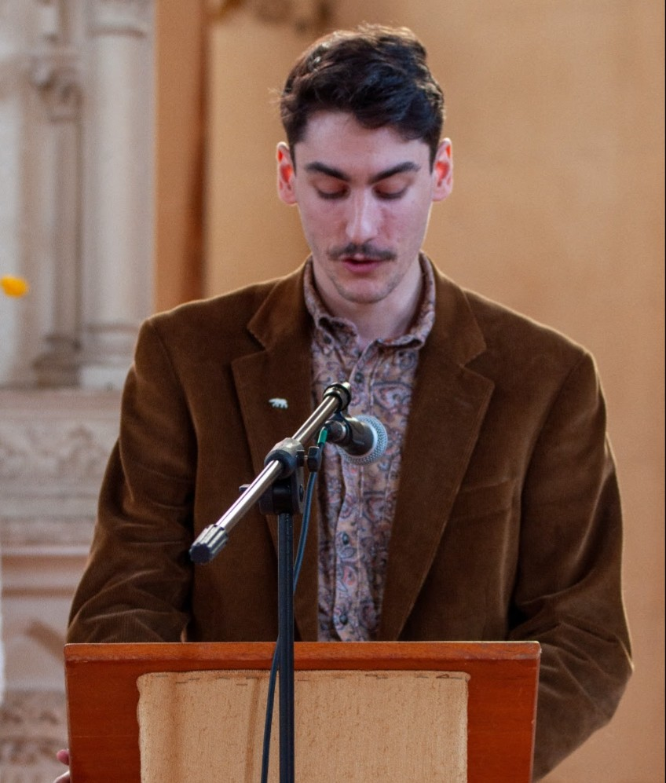
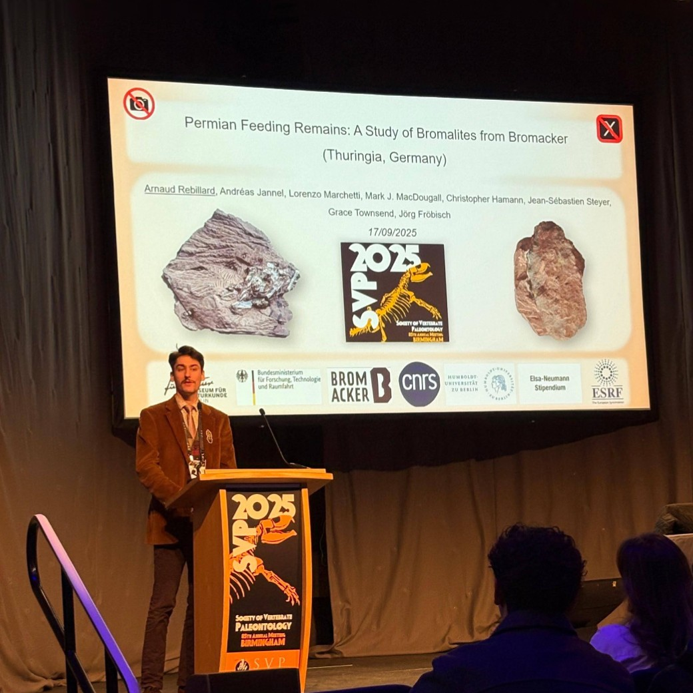
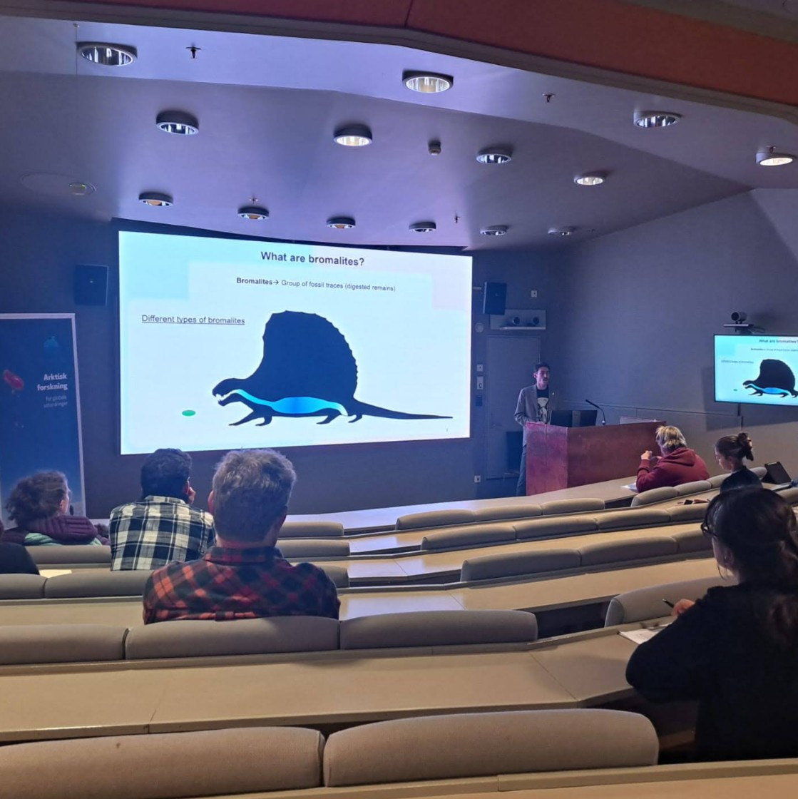
Outreach & science communication
Publications for a general audience
“Le plus ancien vomi fossile d'un animal terrestre nous indique le menu d’un prédateur ayant vécu il y a 290 millions d’années”
Arnaud Rebillard.
Read the articleInterviews for written press coverage
“This fossilized vomit is older than the dinosaurs”
Read the article“Fossilized vomit reveals 290-million-year-old predator’s diet”
Read the article“Le plus ancien vomi fossile terrestre connu à ce jour découvert en Allemagne”
Read the article“Découverte du plus ancien vomi fossile terrestre : ‘Ce sont des capsules temporelles fantastiques’, se réjouit un paléontologue français”
Read the article“Un vomi de 290 millions d’années est le plus vieil exemple de régurgitation fossile par un animal terrestre jamais découvert”
Read the articleRadio, podcast & video interviews
“Earth’s Ancient Hydrogen, And Fossilized Vomit”
Listen to the interview“Un vomi fossilisé révèle le menu d'un prédateur il y a 290 millions d'années”
Listen to the programme“Un vomi qui date de 290 millions d'années”
Listen to the programme“Un Manitobain a contribué à la découverte de vomi fossilisé en Allemagne”
Listen to the interview“Was Ursaurier am Bromacker ausspuckten: Regurgitalithe und digitale Forschung”
Watch the video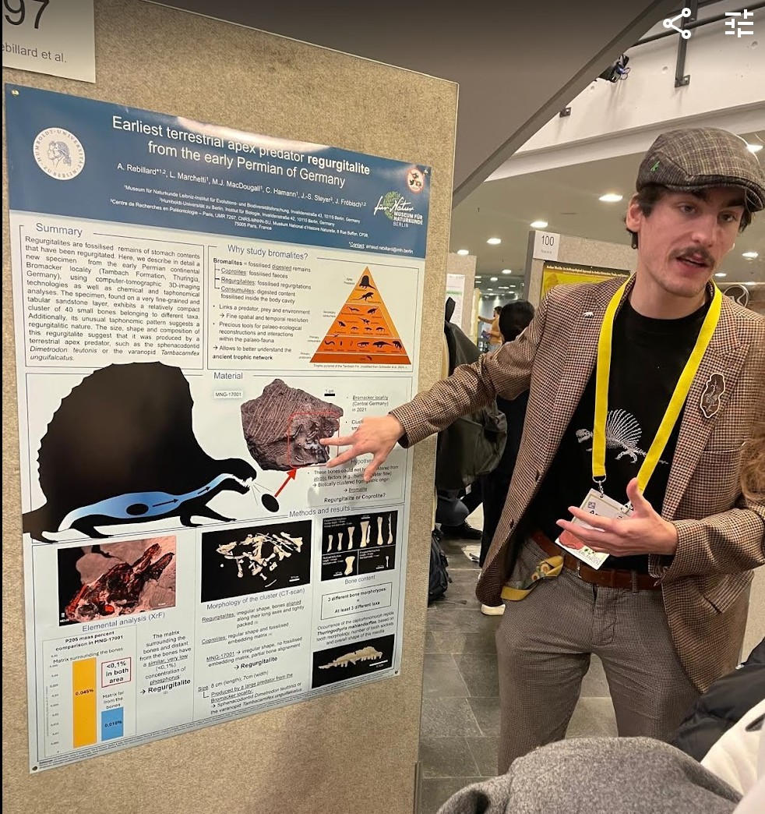
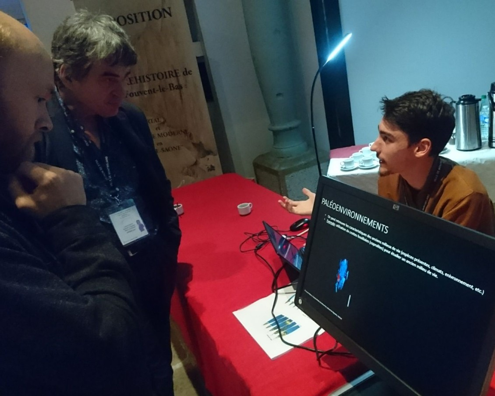
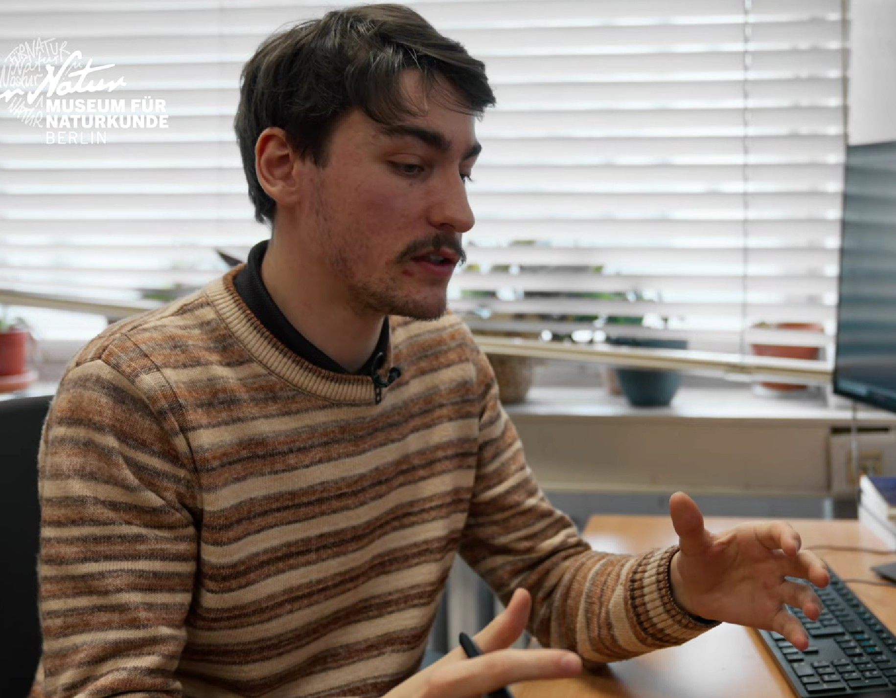
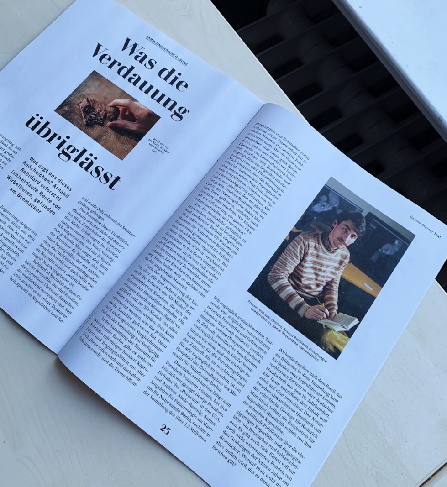
Grants & awards
Research funding & fellowships
Elsa Neumann Doctoral Scholarship
Doctoral funding; total amount listed in CV materials: €~52,000.
ESRF synchrotron beam time · Project ES-1656
Palaeoecology across the French Carboniferous–Permian boundary revealed by 3D exploration of coprolites.
Principal investigator: Arnaud Rebillard; co-investigators: Jörg Fröbisch and J.-Sébastien Steyer.
SOLEIL synchrotron beam time · Project 20230723
Documenting palaeoecological adaptations to the drastic environmental changes of the Carboniferous–Permian boundary through the 3D exploration of fossilized feces.
Principal investigator: Arnaud Rebillard.
ERASMUS+ Mobility Scholarship
ERASMUS+ Mobility Scholarship
ERASMUS+ Mobility Scholarship
International Mobility Grant
Awards & travel grants
PeerJ Award — Best Oral Presentation Prize
View award announcementEAVP Annual Meeting Grant
EAVP Annual Meeting Grant
Student Travel Grant
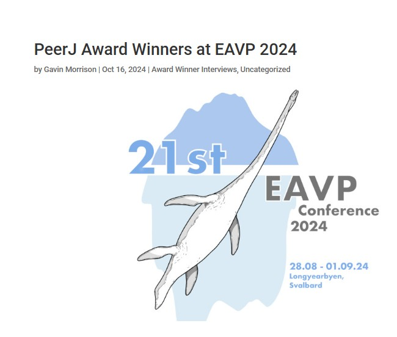
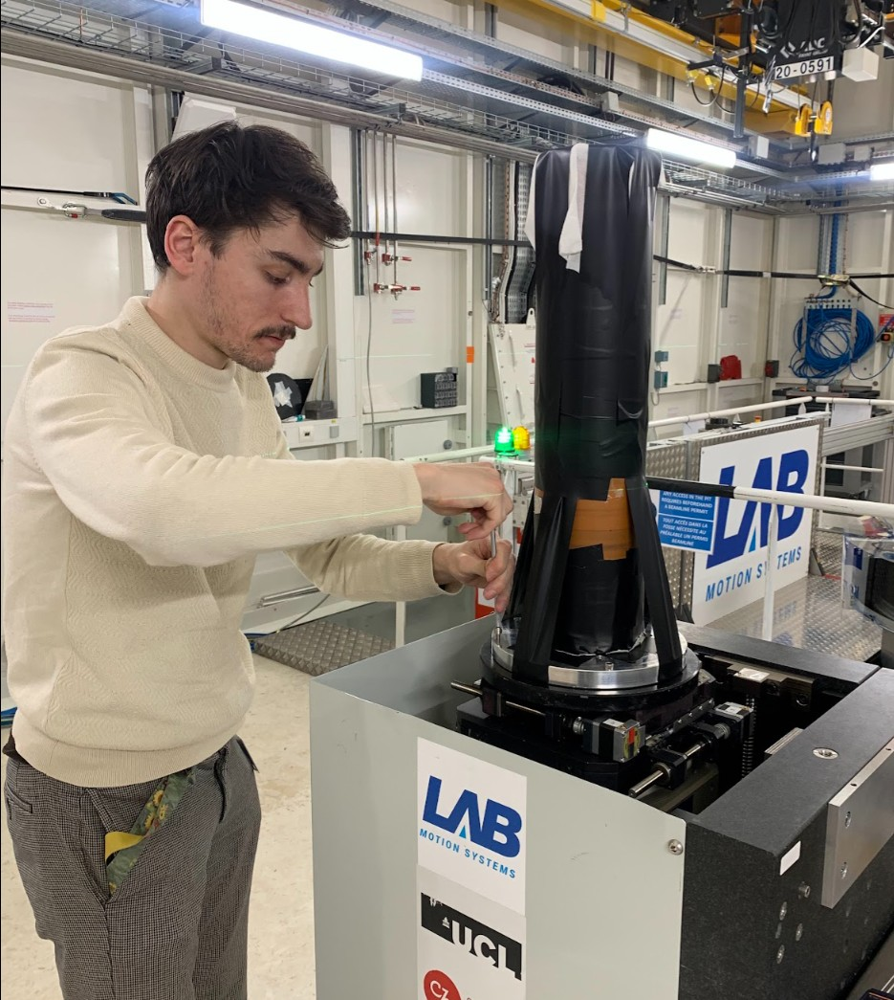